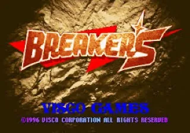
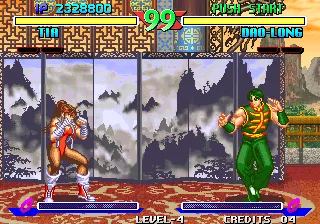
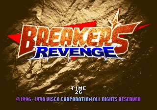
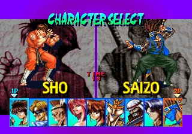
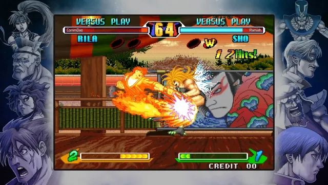
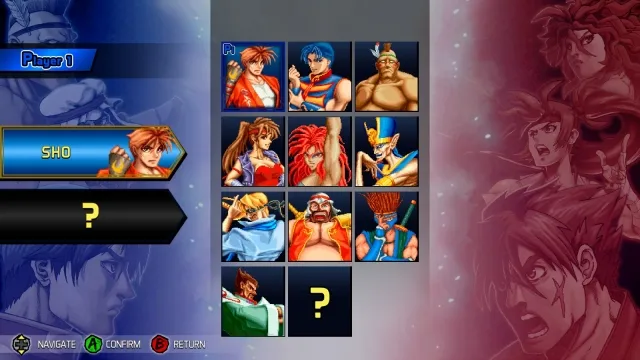
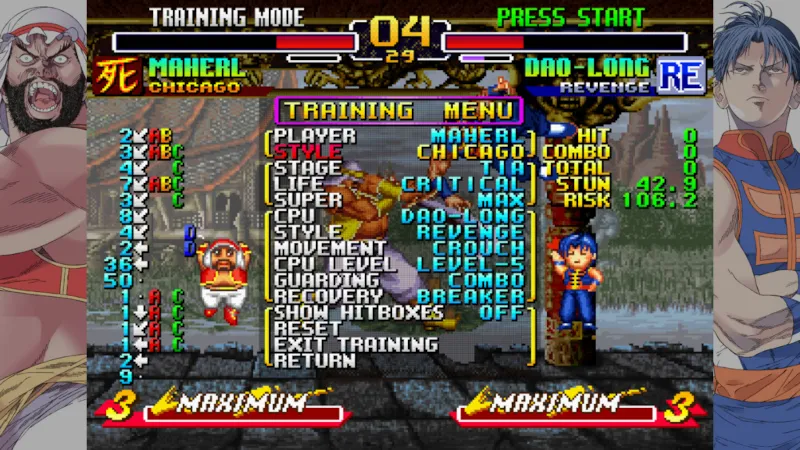
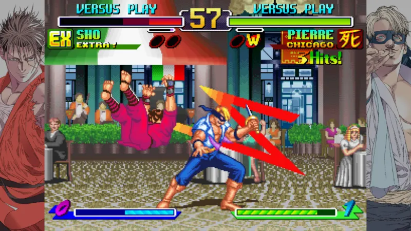

VISCO Corporation
Founded in 1982, VISCO Corporation, is a
Japanese video game company known for its arcade and console titles (Andro Dunos, Bang Bead, Puzzle de Pon!,
Breakers).
Initially part of Taito, VISCO collaborated with Seta and
Sammy on SSV and, since 2008, has focused
on slot machines for Southeast Asia.
Though Visco stopped developing games, certain titles remain popular, with re-released
on modern platforms. Some of their IPs have been revived by other developers, preserving their influence on
arcade gaming.
Breakers
Originally introduced as a concept in 1993 under the title Tenrin no Syo Chicago and referred to as
Crystal Legacy outside Japan, Breakers eventually launched
on
March 21, 1996, for the Neo Geo MVS. Developed by VISCO
and published by SNK, this fighting game became
known for its fluid combat and distinct characters, earning a
dedicated cult following over time.


Breakers Revenge
Released on July 2, 1998, for the Neo Geo MVS and AES by the same companies, Breakers Revenge updates the
previous
game by offering new colors, reworked stages, and introducing a new character, the ninja Saizo.


Breakers Collection
On January 12, 2023, Breakers Collection, a re-release for consoles and PC by
QUByte Interactive was launched, including Breakers and
Breakers
Revenge, and featuring cross-platform online play, leaderboards, new artwork, a training mode, and team
versus.


Breakers Revenge Chicago
Breakers Revenge Chicago, released on August 22, 2024, is an arcade update for the EXA-Arcadia system. The title is a tribute to the prototype Tenrin no Shou –
Chicago.
This version adds new colors, training mode, classic stages, an arranged Neo
Geo CD soundtrack, a new announcer, and 3 modes: Revenge (original), Extra (Neo Geo CD), and
Chicago (rebalanced with short hop).

